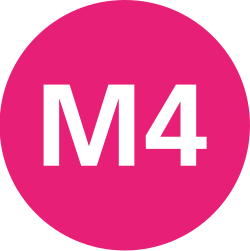
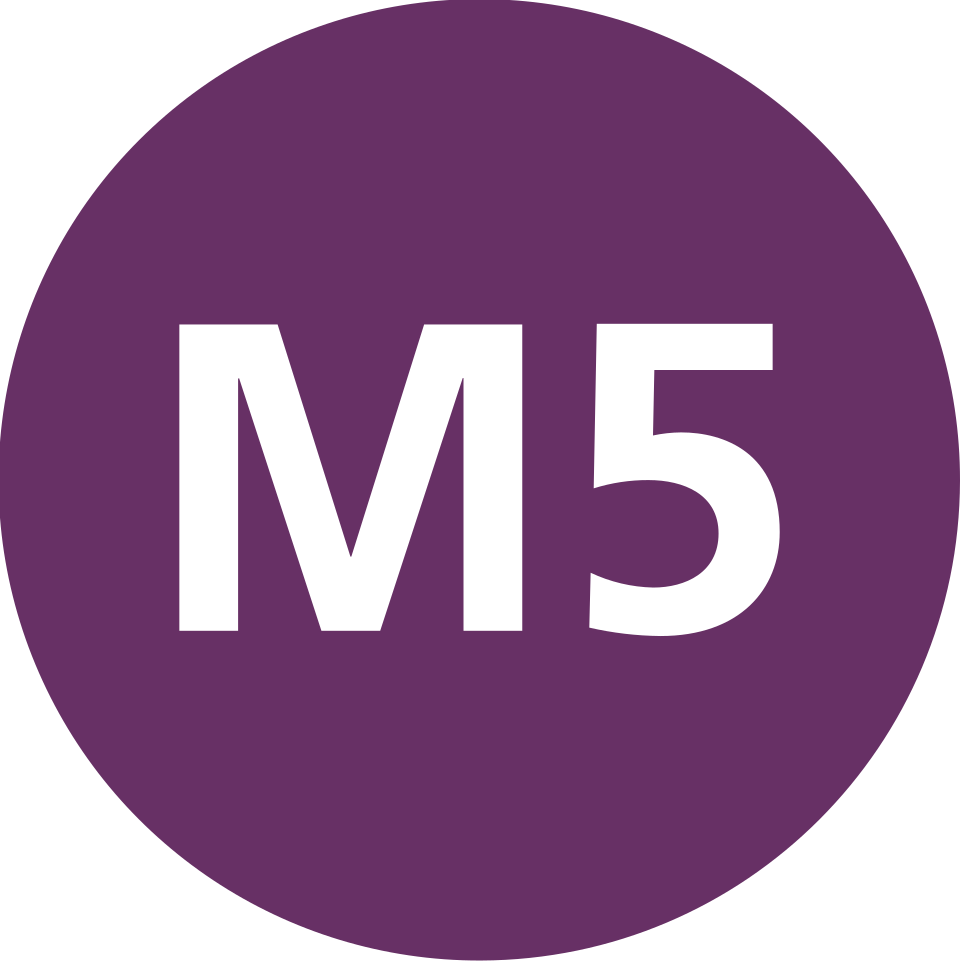
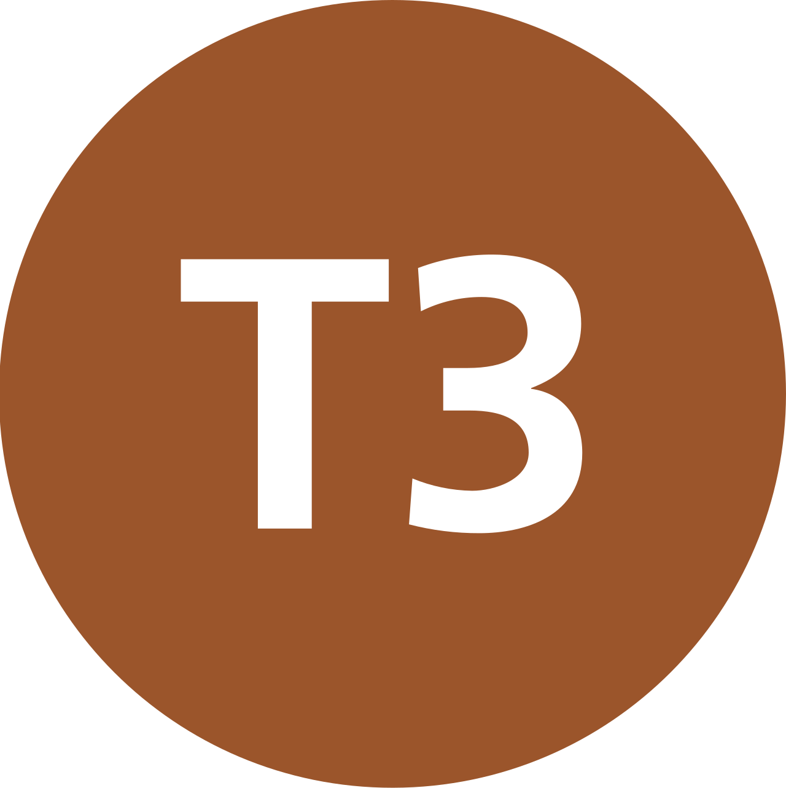
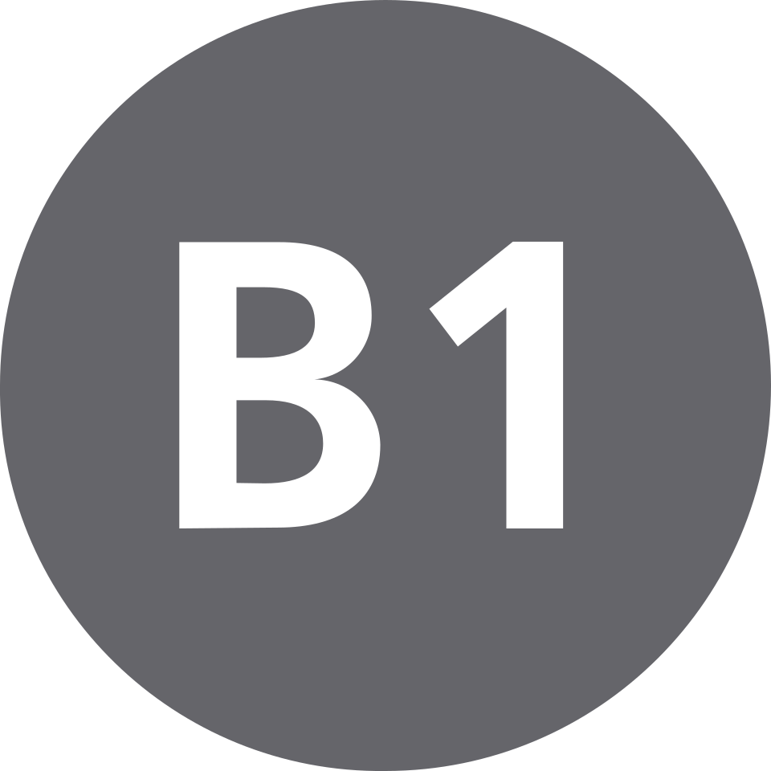
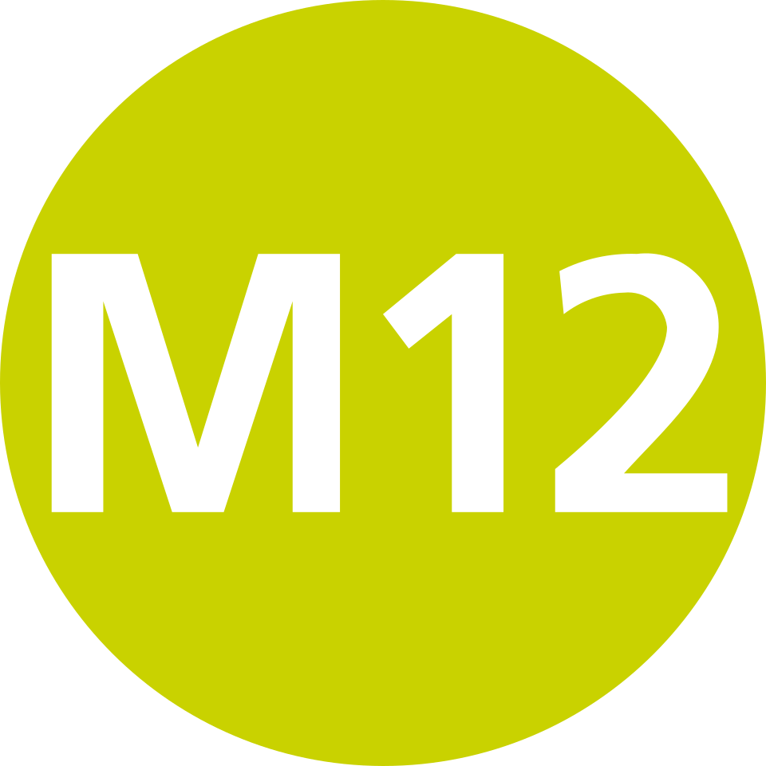
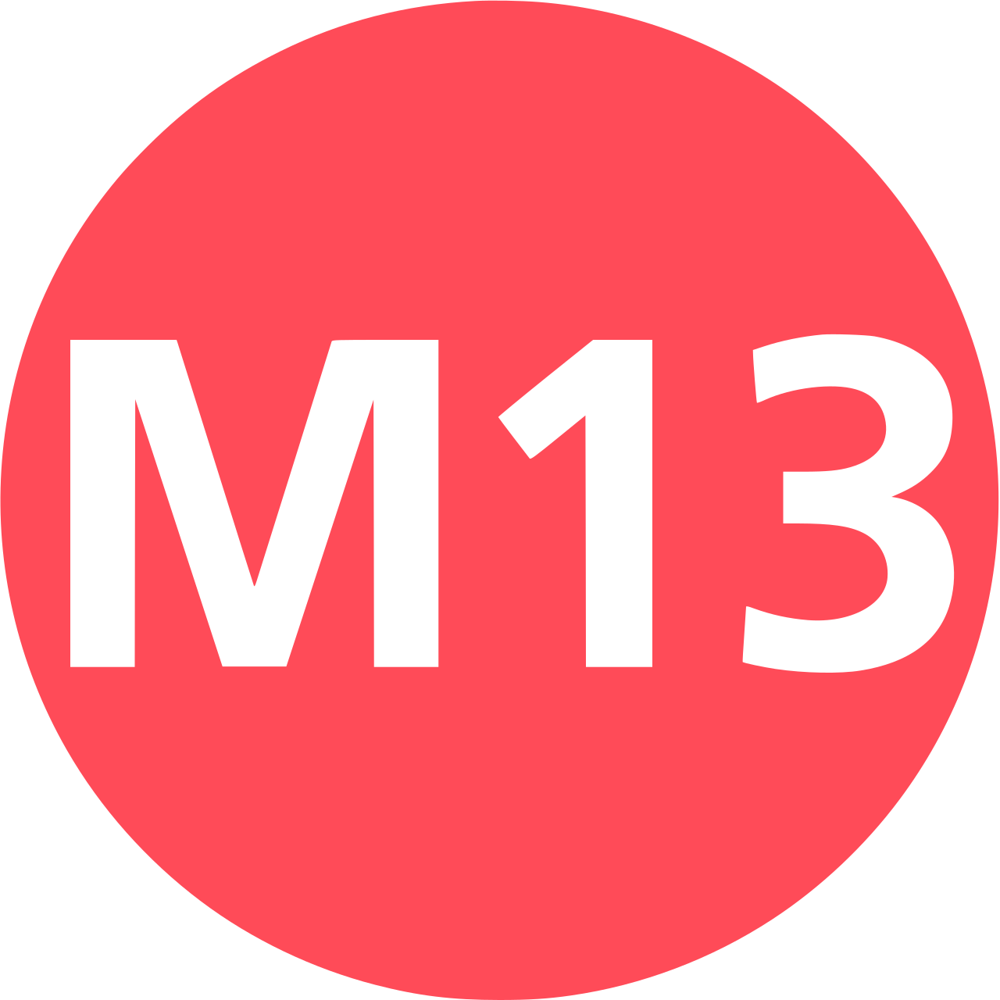
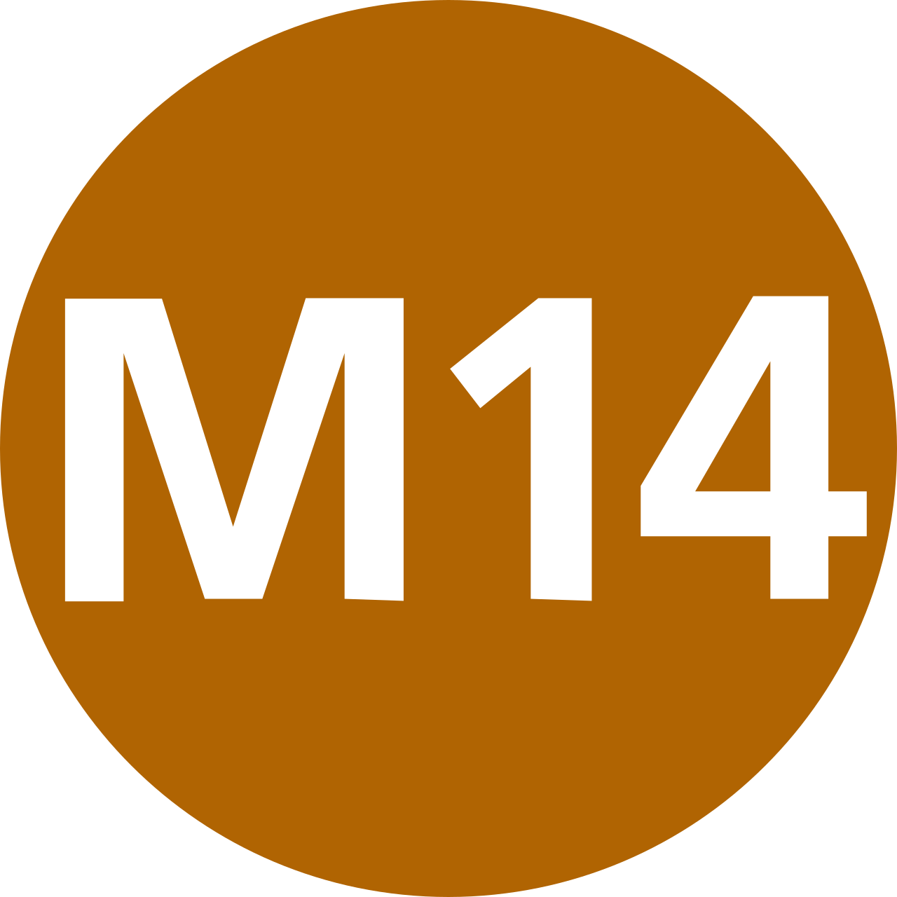

İstanbul Anadolu Yakası
Raylı Sistem Arşivi
İstanbul Anadolu Yakası'ndaki raylı sistem hatları hakkında bilgiler, teknik detaylar ve proje süreçleri.
Güncel Durum ve İstatistikler
İşletmedeki Hatlar
5 hat




İnşa Halindeki Hatlar
5 hat



Tamamlanma Yüzdeleri
M12 Ümraniye - Ataşehir - Göztepe Metro HattıAçılış: 19 Aralık 2026
M4B Tavşantepe - Kaynarca Merkez Metro Hattı UzatmasıAçılış: 2027 İlk Çeyrek
M10 Pendik Merkez - Sabiha Gökçen Hvl. Metro HattıAçılış: 2027 İlk Çeyrek
M14 Altunizade - Bosna Bulvarı Metro HattıAçılış: Nisan 2027
M13 Yenidoğan - Emek Metro HattıAçılış: 2029 Sonrası